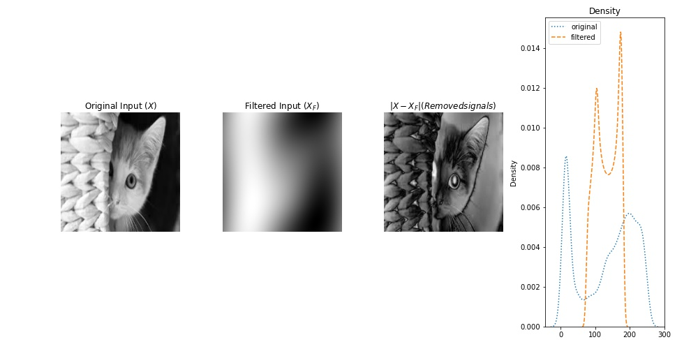
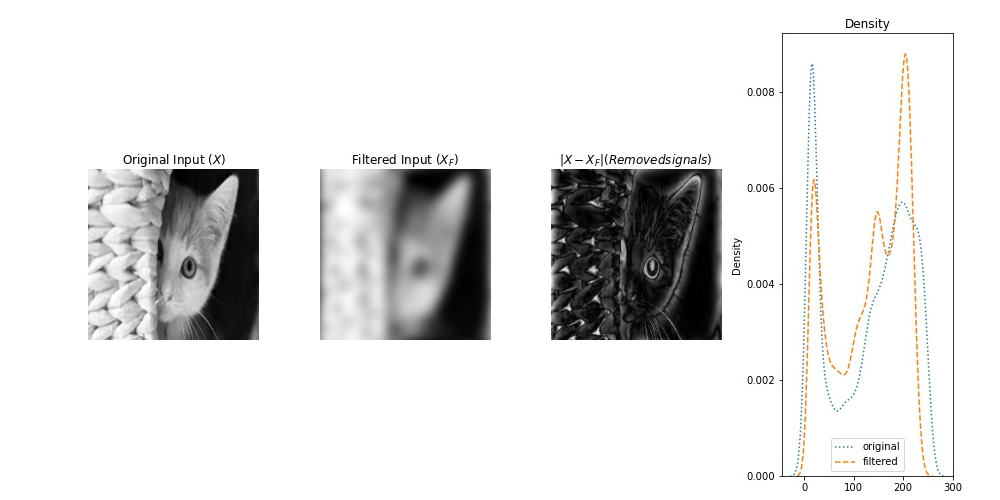
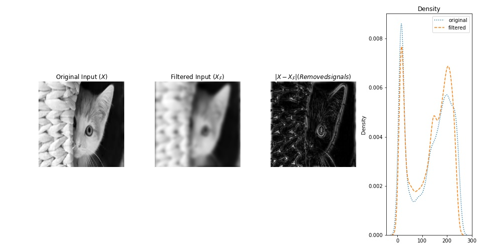

The key point of this post is to review image manipulation, including efficient image blurring and images registration, through using Fourier transform . Recall that discrete Fourier aims to transfer a 2D image from spatial domain (pixel space), i.e. $I(x,y)$ into frequency domain, i.e. $F(u,v)$, where each point ($u,v$) in $F$ represents a particular frequency. For a given pair of frequencies $(u,v), where $$u\in\{1,\dots,N\},v\in\{1,\dots,M\}$ with $N, M$ is size of image $I$, the Fourier transform of $I(x,y)$ is obtained as follows:
$$F(u,v) = \sum_{x=0}^{N-1}\sum_{y=0}^{M-1}I(x,y)\exp(-j2\pi(\frac{ux}{N}+\frac{vy}{M})).$$ Interestingly, $F(0,0)$, which shows zero frequency in the image, is the summation of image's pixels intensity. Note that, for an image of size $NxM$, its representation in frequency domain has the same size.The image in frequency domain are complex number, consisting of two parts: a real part (denoted as $R(u,v)$) and an imaginary part ($I(u,v)$), i.e. $F(u,v) = R(u,v) + I(u,v)j$. As it is shown in Figure 1, the complex number of $F(u,v)$ can be represented in polar coordinate system, leading to:
$$F(u,v) = \underbrace{|F(u,v)|}_{\text{Magnitude}}\exp(j \underbrace{\phi(u,v)}_{\text{phase}}),$$ where $|F(u,v)|=\sqrt{R(u,v)^2+I(u,v)^2}$ and $\phi(u,v) = \arctan(I(u,v)/R(u,v))$ are called magnitude (spectrum) and phase at a given frequency $u,v$, respectively.A blurred image can be achieved by obscuring high frequencies of a given image in the frequency domain. To filter out high frequencies, different variants of low pass filter exist, such as Gaussian low pass (GLP) and ideal filters, among others. For example, the 1st image at 2nd row in figure 2 is a Gaussian low pass filter with band-width 10. This is equivalent to removing edges in the spatial domains, which can equivalently be achieved by convolving the image with a spatial kernel filter (e.g. mean filter). However, it is interesting to note that image blurring can simply be done by one simple multiplication in frequency domain.
import numpy as np
from numpy import fft
def Gaussian_filter(shape, kernel_width, Low=True ):
X,Y=np.meshgrid(range(shape[1]), range(shape[0]))
# center of image
Cx , Cy = shape[1]/2, shape[0]/2
# Gaussian filter with given kernel_width
fltr = np.exp(-((X-Cx)**2+(Y-Cy)**2)/(2*(kernel_width)**2))
# high pass filter is simply 1-fltr
if not Low:
fltr = 1-fltr
return fltr
orig_frq = np.fft.fftshift(np.fft.fft2(I)) #computing 2D fft of the given image using numpy, then zero-center shifting it.
GLP_10 = Gaussian_filter(I.shape, 10)
filter_img_frq=orig_frq* GLP_10
# back the filtered image to spatial domain by inverse of 2D fft
filter_img_spt=np.fft.ifft2(np.fft.ifftshift(filter_img_frq));
In figure 2, the 1st row shows the input image, the filtered image, their difference (removed pixel). 2nd row represents a Gaussian low pass filter (band-width=10) and log of amplitude ($log |F|$) of the above images in frequency domain. Similarly, the 3rd row exhibits the corresponding images by their phase in frequency domain. The last column represents densities of pixel intensity (1st row), amplitude (2nd row) and phase (third row) of the original image and the filtered one.
In figure 3, each row is exhibiting the original image (1st column), its filtered image (2nd column) using a Gaussian low pass (GLP) filter (with a given kernel width), difference between the original image and its filtered one (3rd column). and (4th column) pixel density of images in the 1st and 2nd columns.
Notice that the GLP filter with larger (smaller) kernel width leads to less (higher) blurriness, meaning it allows to pass more (less) higher frequencies.
| band-width= 1 |  |
| band-width= 5 |  |
| band-width= 10 |  |
Image registration tends to align two images through affine transformation including translation, rotation, sheer, and etc. Here, we see how to register two translated images using Fourier transform, which is simple and efficient. Consider two images $I$ and $I_1$ that the latter is the translated version of the former, i.e. $I_1(x,y) = I(x-x_0, y-y_0)$. Phase only correlation can be used to obtain the precise values for $(x_0, y_0)$. Specifically, by representing the images in their frequency domain, we have $F_1(u,v) = e^{-j(ux_0+vy_0)} F(u,v)$. As it can be seen, magnitude of the images are equal, while their phases are different. Thus, their phase difference can be used to estimate the amount of translation. But how exactly? regarding cross-correlation between $F$ and $F_2$, we have: $$C(u,v)=\frac{F(u,v)F^{*}_{1}(u,v)}{|F(u,v)||F^{*}_{1}(u,v)|}= e^{-j2\pi(\frac{u}{N}x_0+\frac{v}{M}y_0)}$$ Interestingly, inverse of Fourier transform of $C(u,v)$ leads to delta function $c(x,y) = \delta(x-x_0, y-y_0)$, which has only 1 at entry $(x_0,y_0)$. Therefore, the values of translation (displacement) is $\arg\max c(x,y)$.
the following code can be used to find the amount of displacement, then translate the first image accordingly.
import numpy as np
import cv2
def trans_value(I1, I2):
#im1: convert to rgb2gray
if np.ndim(I1)==3:
I1 = I1[:,:,0]
#im2: convert to rgb2gray
if np.ndim(I2)==3:
I2 = I2[:,:, 0]
#compute fft of im1
I1_f = (fft.fft2(I1))
#compute phase of fft(im1)
phase_1= np.angle(I1_f)
#the above operations repeated for im2
I2_f = (fft.fft2(I2))
phase_2 = np.angle(I2_f)
#compute difference in the phase of images as follows
diff_phase = np.exp(1j*(phase_1-phase_2))
#inverse of fft, then shift it
poc = fft.fftshift(fft.ifft2(diff_phase))
#finally find the peak in poc
#index of maximum value in matrix poc shows translation values (ty,tx)
ty,tx = np.unravel_index(poc.argmax(), poc.shape)
# origin is now at upper left corner
ty = (-ty+int(I1.shape[0]//2))
tx = (-tx+int(I1.shape[1]//2))
# define translation matrix
T = np.float32([[1, 0, tx], [0, 1, ty]])
img_translation = cv2.warpAffine(I1, T, (I1.shape[1], I1.shape[0]))
return tx,ty, poc, img_translation